O que é, para que serve e como funciona - Git
É um sistema de versionamento, ou seja em caso de bugs você consegue voltar para versão anterior sem o bug, também consegue trabalhar em equipe com várias pessoas editando o mesmo arquivo
Instalando o Git
Entrando no site do Git
- No caso de windonws vá em pront de comando para verificar se realmente não tem o Git instalado
- Em pront de comando digite git --version e rode para ver a resposta
- Se mostrar a versão significa que já está instalado, se disser que não encontro significa que precisa ser instalado
- No caso de não estar intale o pacote compatível e depois de o mesmo comando na pront de comando e vejá se já está instalado
Configurando o Git
Sempre que houver uma alteração no projeto o Git automáticamente vai associar ao usuário responsável pela alteração
- Em pront de comando coloque as seguintes informações para configurar com seu dados
- Para verificar se os dados foram salvos digite as seguintes informações em pront de comando
Iniciando um repositório - Git
Comandos básicos de pront de comando
- cd C:/users/Nome do usuário é a pasta raiz do seu sistema
- cd Desktop/ é a pasta de área de trabalho
- dir ele lista os arquivos que estão dentro da pasta
- tree /f ele monta uma árvore com os arquivos que tem (ATENÇÃO: Nunca de este comando na raiz do seu sistema, pois vai travar o seu pc)
- cd ../ ele volta um diretório
Iniciando repositório
- Entre na pasta desejada
- git init para iniciar o repositório
- Uma pasta oculta vai ser criada
- Veja o que há na pasta por pront de comando ou abilite a opção de visualizar arquivos ocultos

Branch,README e Commit - Git
Branch são versões diferentes do seu sistema. O Branch principal do sitema se chama Master
Commit é quando faz alterações no sitema e envia para o Git e o guite salva apenas as alterações. o Commit geralmente é acompanhado de um comentário que esplica o que você fez
README é o arquivo que todo programador que entra no projeto vai ler. Ele é o arquivo principal do projeto
- Crie um arquivo README.md digite o texto e salve 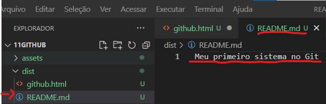
- Vá em pront de comando e de o comando git status e vai ver o que foi alterado na pasta 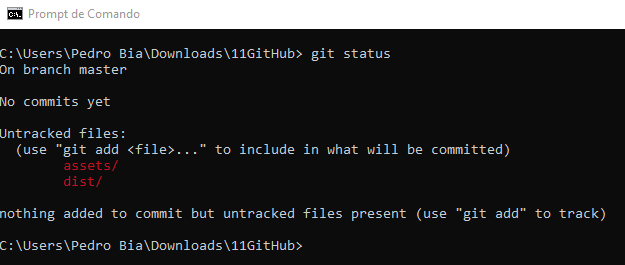
- Em vermelho mostra arquivos que o git nunca viu sendo assim ele não está monitorando esses arquivos
- Dessa forma precisa adicionar esses arquivos. Existem duas for mas de adicionar: git add "nome do arquivo" adiciona um por um e git add -A adiciona todos que o git não está vendo. Após este comando digite git status novamente e veja se deu certo 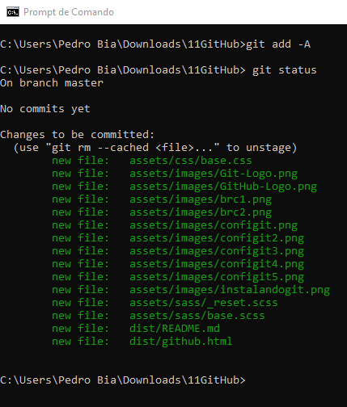
- Para criar o primeiro Commit digite git commit -m "o comentário" e de enter 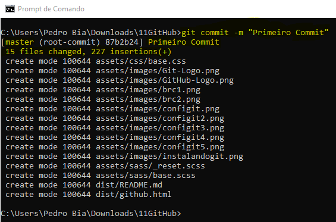
- Para ver a lista de Commit digite git log 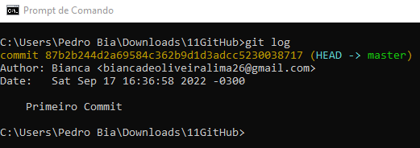
- Se ouver alterações no projeto digite git status e depois git add -A e por fim git status novamente para ver se deu certo 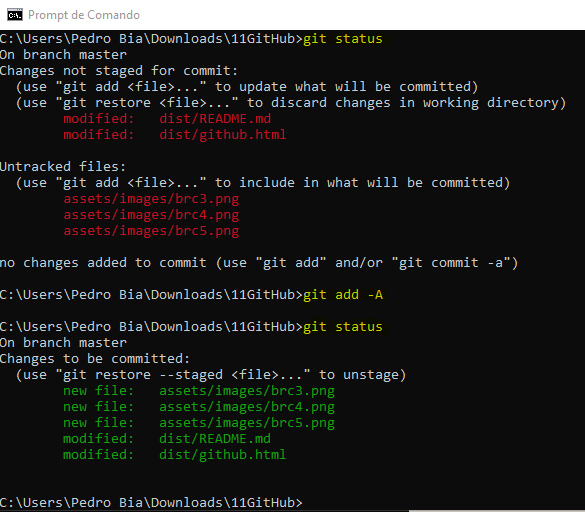
- Para registrar essas alterações no Git é necessário dar Commit 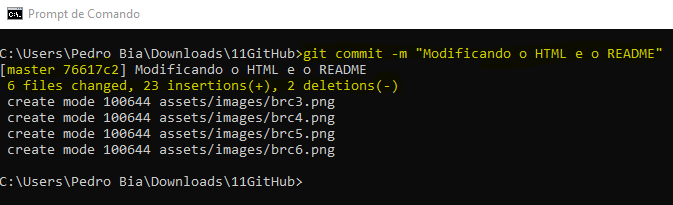
- A gora temos dois commits 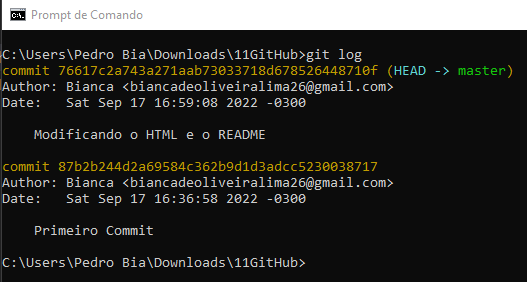
Revertento Modificações - Git
Se tiver feito algo de errado e queira voltar para versão anterior
- Para saber em qual Branch está digite git log e depois git branch 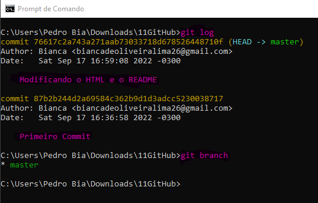
- Crie um novo commit, se ele estiver errado e desejar voltar para a versão anterior
- Existem três formas de git reset.O primeiro passo de tudo é definir o tipo de git reset
- git reset --soft ele volta antes de dar o commit
- git reset --mixed ele volta na fase de adicionar
- git reset --hard ele volta para o commit anterior
- Depois de escolher o tipo de reset coloque o código do commit que deseja voltar 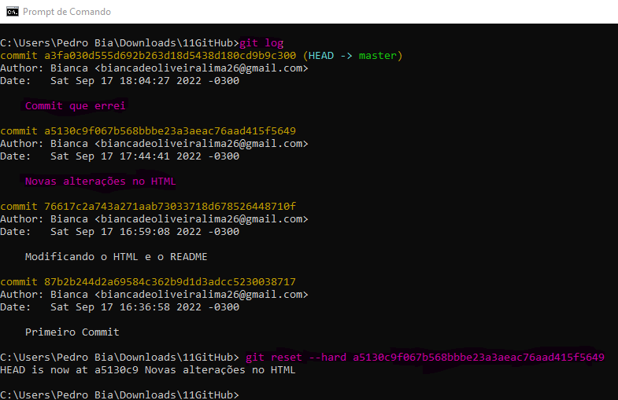
- Digite git log para conferir se resetou 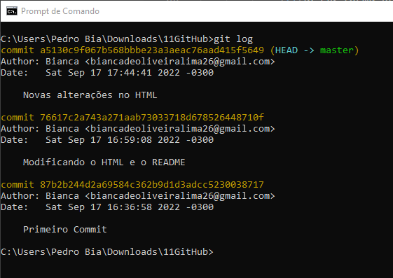
Trabalhando com diferentes Branches - Git
Como criar Novos Branches
- Para criar um novo Branche digite git branch "nome do novo branche"
- Depois para mudar para este novo branche digite git checkout "nome do novo branche" 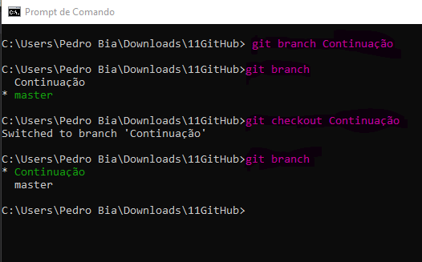